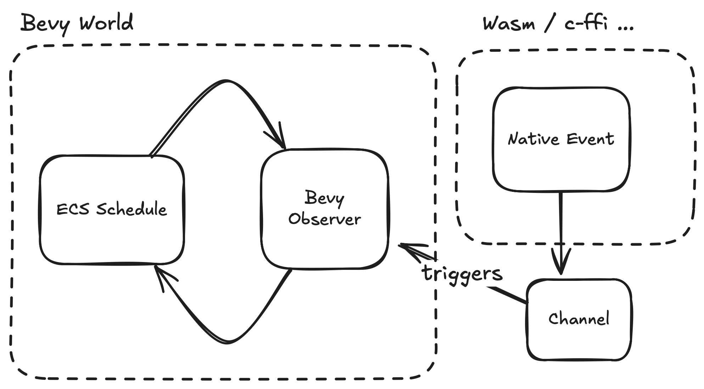

In this short post we introduce the recently released bevy_channel_trigger crate, why we need it to talk to foreign code and what sets it apart from alternatives. If you just want to start using it, find it on GitHub.

Why?
Let's start with why we need to talk to C libraries or any other language in the first place. Bevy is written in Rust, Rust is great but not everything can be supported in Rust natively:
- maybe you want to interface with libraries that are closed source like Apple's native iOS libraries
- maybe you want to talk to web APIs using wasm-bindgen because your game runs on the web
- maybe because time is finite and you don't want to RiiR (Rewrite it in Rust) all the way down
You can just call foreign functions of course right from your Bevy Systems but that is often not a good idea as we don't want to block our game logic. Often these APIs are async as well which means they will produce a result sometime later that we then want to receive back in our Bevy Systems. The schema on the right visualizes this.
This is where channels like crossbeam, async-channel or flume come in handy to communicate back into our Bevy game logic.
Lets look at a very simple example.
Show me an example
In this example we show how to define an Event type MyEvent (line 2)
that we want to send as a reaction to a foreign function calling us
(via callbacks or any other mechanism).
#[derive(Event)]
struct MyEvent(i32);
fn main() {
use bevy_channel_trigger::ChannelTriggerApp;
let mut app = App::new();
app.add_plugins(MinimalPlugins);
// create channel
let sender = app.add_channel_trigger::<MyEvent>();
// use sender from anywhere:
thread::spawn(move || {
let mut counter = 1;
loop {
// send events back to bevy
sender.send(MyEvent(counter));
thread::sleep(Duration::from_secs(1));
counter += 1;
}
});
// register an observer to receive the events sent via `sender`
app.observe(on_event);
app.run();
}For the purposes of this example we simulate this by spinning off a
separate thread (line 14) and passing sender into it. Since this is
a multiple-producers-single-consumer channel we can clone the sender
as often as we want.
The thread will send this event once a second (line 18). We want Bevy systems to react to these Events. Therefore we register an observer (line 25) that will trigger every time this event gets sent.
Let's look at the code of the observer:
fn on_event(trigger: Trigger<MyEvent>) {
let event = trigger.event();
info!("trigger with: {}", event.0);
}Thanks to bevy_channel_trigger we can react to these Events now just
like we would with any other Observer. In this example we simply trace
this to the console.
You can find a more elaborate example in this drop images into bevy on the web demo.
How does crossbeam, flume and others compare
You might be wondering why we chose to use crossbeam here under the hood.
First of all we abstracted that decision away and can easily exchange the underlying channel when we want to.
As a matter of fact the initial implementation was using flume, but ultimately we decided to move to crossbeam because it is by far the most actively maintained channel implementation in Rust and creates less big wasm-binaries compared to flume.
Flume seems actually more lean in direct comparison to crossbeam but by using flume we effectively add another dependency because Bevy itself already brings crossbeam along.
Surprisingly, with async-channel Bevy brings it's another channel implementation, but just like flume it pales in comparison to crossbeam in regards to maintenance.
What about bevy_crossbeam_event?
Last but not least let's look at the alternative: bevy_crossbeam_channel
We actually used this one before but it dates back to a time when the only messaging
system Bevy had was EventWriter/EventReader. These matter as they are more performant in cases where you want to send massive amounts of events at the expense of slightly less ergonomic event handling.
But for our use cases events are used to cross the language barrier primarily and we want to have maximum ergonomics in how to write handlers for these using the new Observer API.
Migration of using bevy_channel_trigger in our crates like bevy_web_popups has already begun an will be finished with the migration to bevy 0.15!
You need support building your Bevy or Rust project? Our team of experts can support you! Contact us.